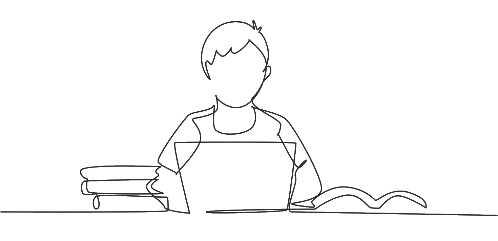
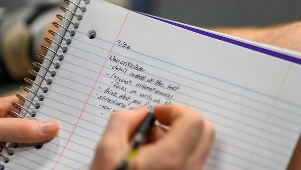

Merhabalar, ben Tunç Anıl GÜLER olarak bu sene bulunduğum 11/B sınıfı bölüm derslerinden biri olan WEB dersimizin beni tanıtan bölümündesiniz.
Şu anda 16 yaşında, 11. sınıf bir öğrenciyim. Genel olarak sakin bir yapım var; ancak arkadaşlarımla birlikteyken daha enerjik ve rahat davranıyorum. Ayrıca hijyen konusunda da biraz hassas birisiyim. Dikkatimi çeken konularda hızlı öğrendiğimi düşünüyorum ve bu proje de benim için tam olarak onlardan biri. Henüz öğrenme aşamasında olsam da, zamanla kendimi daha da geliştireceğime inanıyorum. Bu süreçte denemekten ve yeni şeyler öğrenmekten çekinmiyorum.
• Öğrenme ve gelişme
• Çoğu insan gibi video oyunları
• Müzik dinlemek
• Arkadaşlarımla eğlenmek, zaman geçirmek ve oyun oynamak
• Futbol ve paten gibi birkaç spor daha

Şu anda 11. sınıf öğrencisi olarak uğraştığım konulardan en başında gelen şeyin
derslerim ve
okulum olması gerekirken bu biraz maalesef bende 2. planda.
Benim için eğlence ve arkadaşlık daha önemli.
Uğraştığım şeylere gelecek olursak ise şu anda futbolda kendimi geliştirerek
eğlenmeye, yazılım ile uğraşıyorum ve derslerimde 2. planda olsada onuda tamami ile bırakmıyorum.

Hakkımda kısmını okuyup benim bilgilerime değer verip, benim hakkımda ki bilgileri dikkatle okuduğunuz için teşekkür ederim!